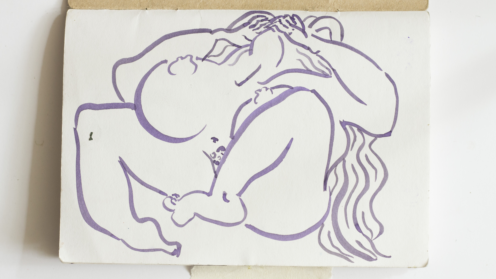
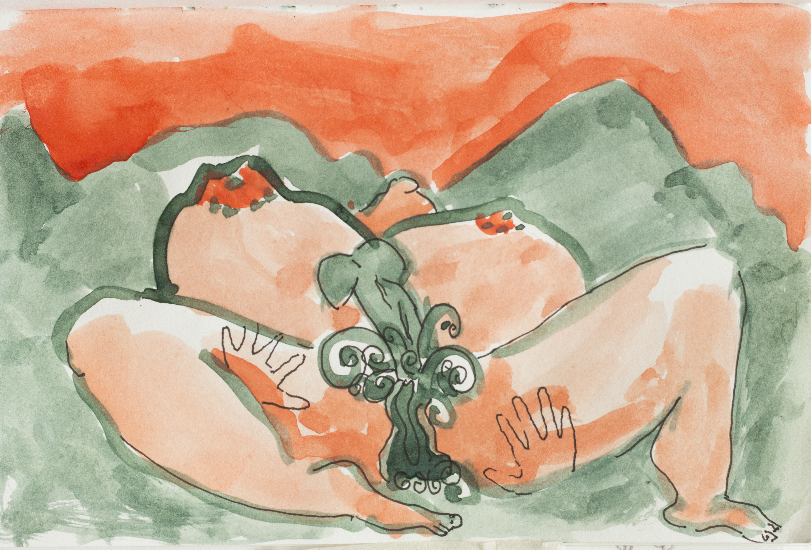
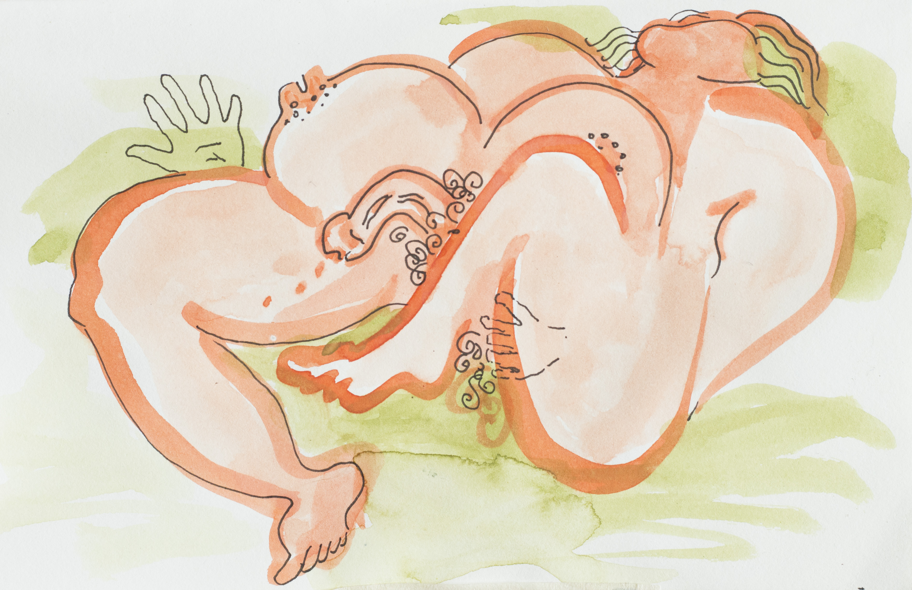
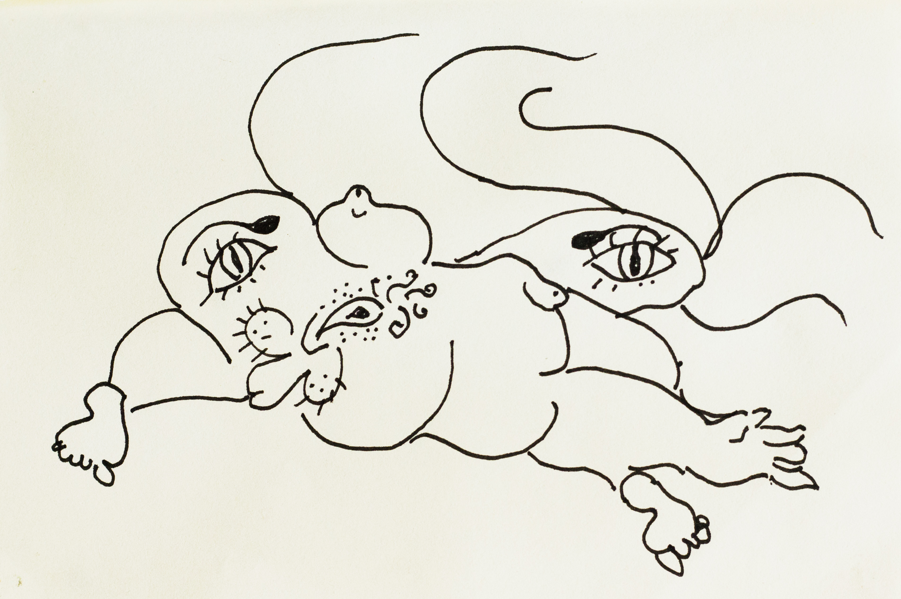

Miles y miles de cuerpos con los sexos mutantes, agrandados por el placer, desfilamos hacia el holocausto esclavos del sudor hormonal que consumimos inadvertidos.
Placer exorbitante, adictiva miel mucosa de mi sexo femenino caliente y egoísta, a qué me llamas cuando me invitas a sentir-me?

Completo narcisista, todo lo refieres a ti mismo, nos robaste la inspiración divina para dejarnos a nosotros, los cuerpos deformes por tu paso voraz, desnutridos y abandonados en la oscuridad. Nos vendimos a bajo costo a los placeres engañosos que nos ofreciste, e invadiste nuestras entrañas para alimentarte del alma. Adictos a tu presencia buscamos hacerte aparecer otra vez.

Placer orgulloso tienes control sobre nosotros hasta deformarnos. No es el amor lo que te importa pero de éste te aprovechas, lo tragas a borbotones y lo tergiversas en mentiras fugaces para tus propios maleficios.
Nos controlas a veces, muchas veces nos controlas deseo de placer que habitas mi cuerpo al que has masturbado y convertido en tu vehículo para habitar esta tierra.
Sabes bien que en este cuerpo caliente y joven puedes manifestarte...

..me quedé quieta sobre la cama para que viera que estaba desnuda debajo de la toalla, sus manos fueron lentamente descubriendo mi piel evaporada y mis movimientos seduciendo a sus testículos para endurecer lo más posible su pene erecto. Sin mirarlo... me sobé sobre sus carnes (vivas o muertas no me importaba) para hacerte vivir... y al fin!!! Un intenso gemido de mi clítoris adormeció hasta la punta los dedos de mis pies.
¡Horrible monstruo gris, te quiero lejos de mi!

Impotente de corazón, monstruo extravagante nos haces creer que el cuerpo es lo más importante y así puedas manifestarte. De todas las maneras más estrambóticas desbordaste nuestra vanidad dominante para que nos arrancáramos la piel y nos destruyéramos los rostros por ese sentir adormecedor.

Cuerpos deformes avergonzados unos de otros nos cubrimos con pinturas, nos afeitamos completas y nos deformamos los huesos sólo para hacerte feliz, para que aparezcas una vez más sobando nuestros sexos muertos, mutilados, deformes.

S. Amelia Serrano R. (1993)
artista visual errante y tintorera natural.